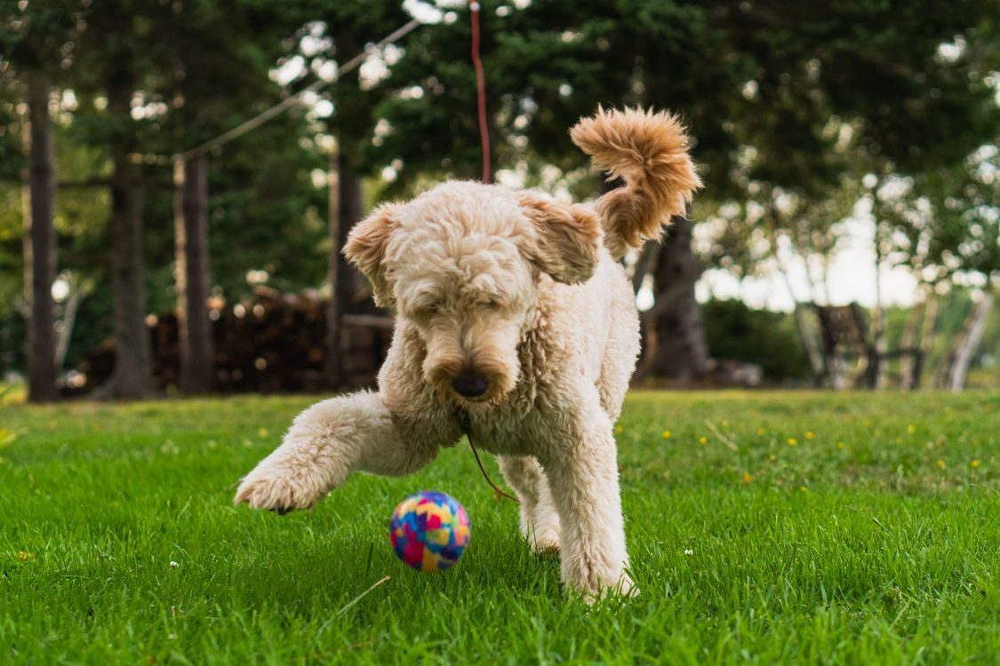

Indoor dog daycare
Indoor dog daycare.
Port City Pups
Mobile, Alabama

Port City Pups in downtown Mobile offers indoor and outdoor dog daycare, overnight boarding, grooming, and training.
Rated 4.9 from 98 reviews, Google-sourced via Kennel Finder.
Call to book: (251) 272-9897Indoor dog daycare.
Outdoor dog daycare.
Overnight boarding.


All photos on this page are stock photos, not photos of this business.
650 St Anthony Street, Mobile, Alabama 36603
Plan a visitCall: (251) 272-9897